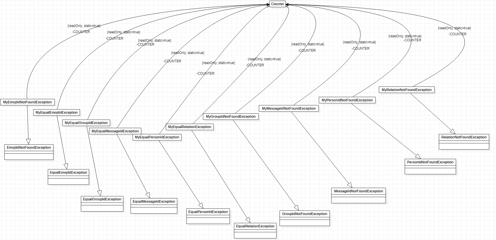
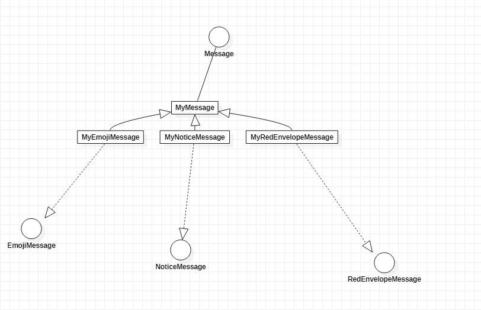
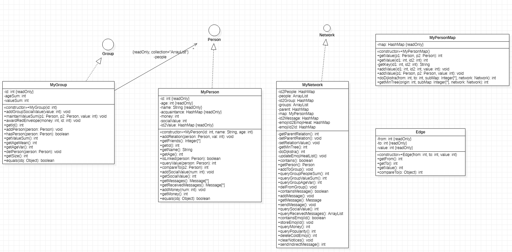

OO_Unit3_JML
JML认识
JML 介绍
JML (Java Modeling Language)，Java 建模语言，指在消灭自然语言中的二义性，比如一个著名的程序员的梗:
请求: 去买一个西瓜，如果看到西红柿，那就买两个
普通人:一个西瓜，两个西红柿
程序员:两个西瓜
那就买两个，这就是自然语言的二义性，因为省略了宾语，所以这导致了二义性。
JML 就能消除这种二义性，防止代码实现的偏差导致的故障，只要完全按照 JML 写，那么一定能符合要求。
JML个人认识
JML 能完全消除二义性，但是其也有一些问题:
- 实现复杂:光是一个删除操作，写成 JML 特别长， 如果和算法有关，比如 最小生成树的算法，写出 JML 更是苦难。
- 阅读困难:因为 JML 实现复杂， 导致其描述不简洁，对于程序员来说阅读障碍太大，甚至看不懂想干什么。 比如最小生成树算法的那个函数，我光看 JML 并没有看懂到底想干什么。
- 出现错误后果严重:如果 JML 错了，那么实现也全是错的，程序员并不知道怎么做才是对的，所以 JML 的正确性及其重要，但是前面两个缺点导致错误出现很难避免。
对于我来说，可能后续不会写 JML，因为实在是太复杂了，但是其对于规格的思想确实很重要，在平时的 code 过程中，其实自己也在写规格 (不会有人不思考就直接开始写吧，不会吧) ，比如这个类要干什么，这个方法要做什么，它应该返回一个什么给我?我自己规格的确定是自然语言和 Java 语言的混合，自然语言描述天然的概括性高，加上 Java 语言的无二义性。
代码设计
最后一次作业的总的JML:
异常类:

每个异常类都有一个 static 的 Counter 成员变量，用于统计该种异常发生次数，和对应 id 造成的异常次数。
消息类:

除了 MyMessage 外， 其余类都继承于 MyMessage，免去因为 EmojiMessage 等接口继承 Message 接口导致的代码重复。
主体逻辑:

主题部分是我主要做优化的地方，现对每个类进行讲解：
MyPerson
该类继承了 Peron 接口，对其主要的优化是使用 HashMap 存储 id 到 Person 的键值对，对于 acquaitance 中每个人，使用 id2Value 存储其对应的 value。
这个优化主要是减少查询时间
MyGroup
该类继承 Group 接口，对其的优化一个是 HashMap 简化查询，还有使用 ageSum 和 valueSum 维护每个 Group 中成员的总价值和总年龄，将查询分摊到每一次的修改上，保证查询指令O(1)的复杂度。
MyNetwork
该类继承 Network 接口，对其优化一个是使用 HashMap 简化查询，还有一个就是使用并查集算法(实现 isCircle 方法)，Prim 算法(实现 getMinTree 方法)，Dijkstra 算法(实现 sendIndirectiveMessage 方法)。对于这些算法也有优化。
- 并查集: 每一次查询都更新记录
- Prim: 使用堆优化，每次找边只在只图里面找，更新的时候通过获得新增节点的
acquaitance属性简化查询。 - Dijkstra:算法和
Prim类似，所以优化思路类似。
另外，因为 emojiMessage 的特殊性，我使用了多种容器:
emojiId2EmojiHeat:方便查询每种emoji的受欢迎程度emojiId2Id:装每一种emojiId对应那些message，方便clearColdMessage的时候更快查询到需要删除的message。
其中的MyPersonMap是用于存储person之间关系的类，并实现了 Prim 和 Dijkstra 算法，提供方法让 MyNetwork 对象调用。
Edge 是用于辅助堆优化而创建的类，堆中存储的是 Edge 对象，Edge 有关于边的两个端点和边权值的属性。
测试和debug
测试
本次测试主要是和其他人对拍进行测试，整体数据生成逻辑分为所有指令槽随机枚举测正确性，和特定指令池枚举测试复杂度(比如sim指令测试复杂度，指令池主要是 ap，ar，sim，am 指令)。在测试中发现测试只能发现 bug，不能证明程序正确。示例如下:
sim: 该指令我代码的INF太小，在强测中被找出，但是课下测试因为数据枚举随机性高，没有发现此类错误。
可见，即使有 JML，实现正确性还是有些细节方面的雕琢
bug
- 第一次作业bug: 第一次作业没有被测试出bug，但是第一次作业留下了隐患，那就是我的并查集没有更新记录，导致后续作业数据量增大出现了 TLE 的情况
- 第二次作业:第二次作业比较惨烈，先是
qbs指令因为并查集的问题爆 T，又是函数调用错误出现 bug，再是因为没有维护组的valueSum爆 T。 - 第三次作业:第三次作业性能做了全面优化，可惜
INF太小，导致出错。
Network 拓展
需求分析
这次拓展主要是对 Person 类进行了拓展,多了如下四种人:
- Advertiser
- Producer
- Customer
- Person
其中 Person 可以继续使用之前的实现，新增的三个类可以看成一个 group,Producer 向 Advertiser 发送信息，Advertiser 就是一个分发器，负责把信息发给订阅了该种类商品的 Customer。Customer 要购买,那就向自己订阅了的 Advertiser 发送信息，Advertiser 把对应的信息发送给 Producer。
至于统计销售量，只需要在每次购买之后，修改 Producer 维护的变量,销售路径则是从 Producer 到 Customer,这些就交给 Person 来维护关系图,NetWork 只需要知道 Producer 是谁.
主要接口方法
public interface Network {
/*@ public instance model non_null Person[] producers;
@ public instance model non_null Person[] advertisers;
@ public instance model non_null Person[] customers;
@*/
/*@ public normal_behavior
@ assignable messages,getMessage(id).getPerson2().messages
@ ensures getMessage(id).getPerson2().messages.length = (getMessage(id).getPerson2().messages.length) + 1
@ ensures (\forall int i; 0 <= i && i < \old(getMessage(id).getPerson2().getMessages().size());
@ \old(getMessage(id)).getPerson2().getMessages().get(i+1) == \old(getMessage(id).getPerson2().getMessages().get(i)));
@ ensures \old(getMessage(id)).getPerson2().getMessages().get(0).equals(\old(getMessage(id)));
@ ensure (\forall i; 0 <= i && i < customers.length; customers[i].isLinked(getMessage(id).getPerson2()) =>
@ customers[i].messages.length = (customers[i].messages.length) + 1 &&
@ (\forall int i; 0 <= i && i < \old(customers[i].getMessages().size())
@ \old(customers[i].getMessages().get(i+1) == \old(customers[i].getMessages().get(i))) &&
@ \old(customers[i].getMessages().get(0).equals(\old(getMessage(id))))
@ ensures !containsMessage(id) && messages.length == \old(messages.length) - 1 &
@ (\forall int i; 0 <= i && i < \old(messages.length) && \old(messages[i].getId()) != id;
@ (\exists int j; 0 <= j && j < messages.length; messages[j].equals(\old(messages[i]))));
@ also
@ public exceptional_behavior
@ signals (MessageIdNotFoundException e)
@ !containsMessage(id) ||
@ containsMessage(id) && getMessage(id).getType() == 1;
@ signals (RelationNotFoundException e)
@ containsMessage(id) && getMessage(id).getType() == 0 &&
@ !(getMessage(id).getPerson1().isLinked(getMessage(id).getPerson2()));
@ signals (PersonIdNotFoundException e)
@ (\forall i; 0 <= i && i < producers.length;!producers[i].equals(getMessage(id).getPerson1())) ||
@ (\forall i; 0 <= i && i < advertisers.length;!advertisers[i].equals(getMessage(id).getPerson2()))
@*/
void postAdvertise(int id);
/*@ public normal_behavior
@ ensures \result == producer.money
@ also
@ public exceptional_behavior
@ signals (PersonIdNotFoundException e)
@ (\forall i; 0 <= i && i < producers.length; !producers[i].equals(producer))
@*/
int querySaleVolume(Person producer);
int querySalePath(Person producer);
/*@ public normal_behavior
@ ensure
@ (\exist i; 0 <= i && i < advertisers.length;advertisers[i].isLinked(getMessage(id).getPerson2())) && advertisers[i].isLinked(getMessage(id).getPerson1()))
@ assignable getMessage(id).getPerson2().messages
@ ensures getMessage(id).getPerson2().messages.length = (getMessage(id).getPerson2().messages.length) + 1
@ ensures (\forall int i; 0 <= i && i < \old(getMessage(id).getPerson2().getMessages().size());
@ \old(getMessage(id)).getPerson2().getMessages().get(i+1) == \old(getMessage(id).getPerson2().getMessages().get(i)));
@ ensures \old(getMessage(id)).getPerson2().getMessages().get(0).equals(\old(getMessage(id)));
@ assignable getMessage(id).getPerson2().money
@ getMessage(id).getPerson2().money = \old(getMessage(id).getPerson2().money) + getMessage(id).getsocialValue()
@ ensures &!containsMessage(id) && messages.length == \old(messages.length) - 1 &
@ (\forall int i; 0 <= i && i < \old(messages.length) && \old(messages[i].getId()) != id;
@ (\exists int j; 0 <= j && j < messages.length; messages[j].equals(\old(messages[i]))));
@ also
@ public exceptional_behavior
@ signals (PersonIdNotFoundException e)
@ (\forall i; 0 <= i && i < customers.length;!customers[i].equals(getMessage(id).getPerson1())) ||
@ (\forall i; 0 <= i && i < producers.length;!producers[i].equals(getMessage(id).getPerson2()))
@ signals (RelationNotFoundException e)
@ (\forall i; 0 <= i && i < advertisers.length;!advertisers[i].isLinked(getMessage(id).getPerson2())) || !advertisers[i].isLinked(getMessage(id).getPerson1()))
@*/
void buyGood(int id);
}心得体会
面向对象这门课本身就是让我们关注事务的抽象认知，关注功能并对其分类，而不是细究实现的方法，JML 的编写也确实就是这样，屏蔽了实现，只关注方法的最终结果，很 OO。
但是这个单元还是有不是很 OO 的地方，对于一些指令，比如 ar，在 person 接口中竟然没有实现的方法，使得 acquaitance 属性在接口提供的方法里面无法被更改，我不得不自己创建方法，然后再向下转型，这是很不 OO 的。接口就应该让调用者认为自己能实现所有功能，而不是还得依靠类自身独立的属性。